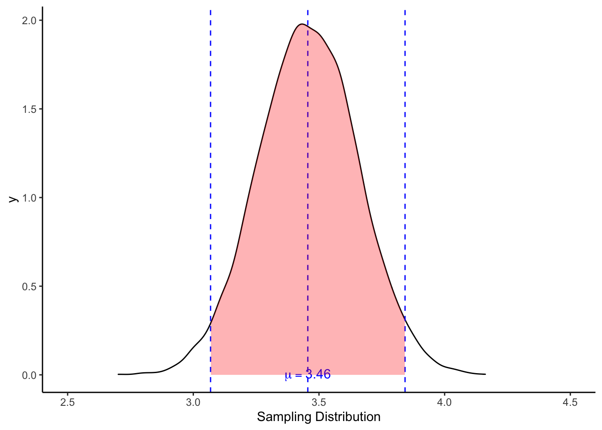

Lab 07: Sampling Distribution, Confidence Intervals, and z-Test
Feb 23, 2022
โหลดแพ็คเกจที่จะต้องใช้ในแบบฝึกหัดนี้
library(psych)
library(ggplot2) # for plots
library(gridExtra) #for plots1. Sampling Distribution
การแจกแจงค่าตัวอย่าง (sampling distribution) แสดงให้เห็นถึงความน่าจะเป็นของค่าสถิติที่เก็บได้จากสุ่มกลุ่มตัวอย่างจำนวนหนึ่ง ๆ จากประชากร ยกตัวอย่างเช่น หากเราสุ่มกลุ่มตัวอย่าง 50 คนจากประชากร 300,000 คน ค่าสถิติของกลุ่มตัวอย่าง (statistics; เช่น ค่าเฉลี่ยของกลุ่มตัวอย่าง) มีความเป็นไปได้สูงที่จะใกล้เคียงกับค่าสถิติของประชากร (parameters) แต่ก็มีความเป็นไปได้เช่นกันที่ความคลาดเคลื่อนจากการสุ่ม (sampling errors) จะทำให้เราได้ค่าสถิติของกลุ่มตัวอย่างแตกต่างไปจากค่าในระดับประชากร การแจกแจงค่าตัวอย่าง (sampling distribution) เป็นการแจกแจงความเป็นไปได้ของค่าสถิติที่เราอาจจะได้จากการสุ่มกลุ่มตัวอย่าง
เพื่อให้เข้าใจได้ง่ายขึ้น เราจะเรียนรู้เกี่ยวกับการแจกแจงค่าตัวอย่างผ่านการจำลองข้อมูล (data simulation)
ในแบบฝึกหัดนี้ เราจะสมมติว่าเรารู้ค่าสถิติประชากร (parameters) ได้แก่ ค่าเฉลี่ย (\(\mu\)) และส่วนเบี่ยงเบนมาตรฐาน (\(\sigma\)) เพื่อช่วยให้เข้าใจเนื้อหาได้ง่ายขึ้น (แต่ขอให้ระลึกไว้ว่าในการเก็บข้อมูลจริง เราแทบจะไม่มีทางรู้ข้อมูลระดับประชากรได้เลย)
สมมติว่าเรามีข้อมูลคะแนนสภาวะอารมณ์ (mood) ของประชากรนักเรียนในจินตนาการจำนวน 30,538 คน
ขอให้ดาวน์โหลดและบันทึกไฟล์ข้อมูลไว้ใน working directory เดียวกับ R script
pop <- read.csv("RES_STAT_Lab7_data.csv")
head(pop)## ID mood
## 1 1 3.447279
## 2 2 1.103520
## 3 3 6.134288
## 4 4 5.865394
## 5 5 4.479369
## 6 6 4.789060n <- length(pop$mood) #population size
n## [1] 30538pop_mean <- mean(pop$mood) #population mean
pop_var <- sum((pop$mood - pop_mean)^2)/n #population variance. Use n, instead of n-1
pop_sd <- sqrt(pop_var) #population standard deviationจากประชากรนักเรียนนี้ เราจะสุ่มเลือกกลุ่มตัวอย่างออกมาวัดสภาวะอารมณ์ จำนวน 50 คน
survey <- sample(pop$mood, 50)
describe(survey) # sample statistics (function from psych package)## survey
## n missing distinct Info Mean Gmd .05 .10 .25 .50 .75
## 50 0 50 1 3.336 1.472 1.362 1.753 2.433 3.219 4.442
## .90 .95
## 5.151 5.354
##
## lowest : 0.3396683 1.2400032 1.2958668 1.4421102 1.5110343, highest: 5.1594940 5.1700502 5.5043376 5.5836801 5.6353443pop_mean## [1] 3.455544pop_sd## [1] 1.395769สังเกตว่าค่าสถิติจากกลุ่มตัวอย่าง (เช่น ค่าเฉลี่ยและส่วนเบี่ยงเบนมาตรฐาน) นั้นแตกต่างไปจากค่าพารามิเตอร์ของประชากร ความแตกต่างนั้นเกิดจากความคลาดเคลื่อนในกระบวนการสุ่มตัวอย่าง (sampling error) ตามหลักของความน่าจะเป็น
1.1 จำลองการสุ่มซำ้ ๆ sampling, sampling, sampling, …
เพื่อจะให้เห็นภาพของความน่าจะเป็น เราจะลองสมมติว่า เราสุ่มกลุ่มตัวอย่างขึ้นมาใหม่ 50 คนเพื่อทำการสำรวจ (survey) แล้วคำนวณค่าสถิติ (เช่น ค่าเฉลี่ย) เก็บไว้ จากนั้นสุ่มใหม่อีก 50 คน ทำเช่นนี้ซ้ำไป 20 รอบ (กระบวนการนี้เรียกว่า resampling)
## [1] "Survey 1"
## s
## n missing distinct Info Mean Gmd .05 .10 .25 .50 .75
## 50 0 50 1 3.745 1.725 1.710 1.970 2.690 4.001 4.612
## .90 .95
## 5.696 6.071
##
## lowest : -0.5851444 1.3263832 1.6402958 1.7943474 1.8504463
## highest: 5.7278371 5.8840753 6.2241698 6.3062965 8.1453971
## [1] "Survey 2"
## s
## n missing distinct Info Mean Gmd .05 .10 .25 .50 .75
## 50 0 50 1 3.542 1.548 1.179 1.891 3.030 3.517 4.285
## .90 .95
## 5.462 5.528
##
## lowest : -0.35090808 0.03405778 0.77479373 1.67311826 1.79590445
## highest: 5.47708566 5.52191845 5.53238502 5.62430664 6.75437934
## [1] "Survey 3"
## s
## n missing distinct Info Mean Gmd .05 .10 .25 .50 .75
## 50 0 50 1 3.493 1.534 1.484 1.696 2.463 3.617 4.368
## .90 .95
## 5.019 5.527
##
## lowest : 0.3593565 1.3495815 1.4077903 1.5781518 1.5803906, highest: 5.4915412 5.4960723 5.5523306 5.7313827 5.9074416
## [1] "Survey 4"
## s
## n missing distinct Info Mean Gmd .05 .10 .25 .50 .75
## 50 0 50 1 3.289 1.577 1.156 1.807 2.418 3.184 4.121
## .90 .95
## 4.861 5.677
##
## lowest : -0.3566126 0.9408535 1.0302375 1.3095529 1.5098780
## highest: 5.2959937 5.6471394 5.7022385 5.9661831 7.2054526
## [1] "Survey 5"
## s
## n missing distinct Info Mean Gmd .05 .10 .25 .50 .75
## 50 0 50 1 3.326 1.445 1.219 1.687 2.392 3.351 4.413
## .90 .95
## 4.936 5.106
##
## lowest : 0.9458472 0.9751200 1.1839695 1.2625100 1.6223521, highest: 5.0003422 5.0303970 5.1681473 5.2142279 5.2932495
## [1] "Survey 6"
## s
## n missing distinct Info Mean Gmd .05 .10 .25 .50 .75
## 50 0 50 1 3.519 1.88 0.7296 1.3405 2.3382 3.9551 4.7042
## .90 .95
## 5.3740 5.8201
##
## lowest : -0.3768736 -0.0583227 0.6577948 0.8174576 0.9458472
## highest: 5.3794167 5.5664901 6.0275752 6.2086863 6.3141146
## [1] "Survey 7"
## s
## n missing distinct Info Mean Gmd .05 .10 .25 .50 .75
## 50 0 50 1 3.291 1.653 1.097 1.532 2.462 3.145 3.975
## .90 .95
## 5.586 5.952
##
## lowest : -0.4592843 1.0158708 1.0308166 1.1784941 1.1830109
## highest: 5.6581164 5.9204382 5.9772447 6.7713254 7.2696732
## [1] "Survey 8"
## s
## n missing distinct Info Mean Gmd .05 .10 .25 .50 .75
## 50 0 50 1 3.609 1.596 1.438 2.049 2.742 3.623 4.392
## .90 .95
## 5.255 5.843
##
## lowest : -0.5162465 1.0824457 1.2106806 1.7169435 1.9545934
## highest: 5.2967464 5.4598139 6.1572839 6.9090037 7.7091728
## [1] "Survey 9"
## s
## n missing distinct Info Mean Gmd .05 .10 .25 .50 .75
## 50 0 50 1 3.235 1.782 1.050 1.352 2.177 3.293 4.487
## .90 .95
## 5.150 5.367
##
## lowest : -1.3207181 0.8286800 0.9771296 1.1387613 1.2041281
## highest: 5.2194171 5.3228282 5.4023339 5.8766697 6.4090212
## [1] "Survey 10"
## s
## n missing distinct Info Mean Gmd .05 .10 .25 .50 .75
## 50 0 50 1 3.22 1.379 1.513 1.814 2.266 3.147 3.875
## .90 .95
## 4.674 5.601
##
## lowest : 0.8263926 1.1839695 1.3498320 1.7134642 1.7942275, highest: 4.7321641 5.3641542 5.7947540 5.8792754 6.2210218
## [1] "Survey 11"
## s
## n missing distinct Info Mean Gmd .05 .10 .25 .50 .75
## 50 0 50 1 3.487 1.528 1.429 1.713 2.445 3.486 4.544
## .90 .95
## 5.317 5.630
##
## lowest : 1.026616 1.062976 1.266702 1.628371 1.708250, highest: 5.441401 5.496039 5.738890 5.782091 5.872453
## [1] "Survey 12"
## s
## n missing distinct Info Mean Gmd .05 .10 .25 .50 .75
## 50 0 50 1 3.444 1.611 1.167 1.626 2.723 3.424 4.447
## .90 .95
## 5.315 5.421
##
## lowest : 0.06415119 0.50417415 0.92979615 1.45779089 1.57399800
## highest: 5.38085274 5.39030267 5.44572795 5.77327745 5.82078787
## [1] "Survey 13"
## s
## n missing distinct Info Mean Gmd .05 .10 .25 .50 .75
## 50 0 50 1 3.957 1.567 2.150 2.303 2.770 3.943 5.111
## .90 .95
## 5.669 5.887
##
## lowest : 1.462548 1.722680 2.077963 2.237042 2.241097, highest: 5.687082 5.738629 6.007641 6.153324 6.912331
## [1] "Survey 14"
## s
## n missing distinct Info Mean Gmd .05 .10 .25 .50 .75
## 50 0 50 1 3.556 1.402 1.605 2.183 2.726 3.517 4.163
## .90 .95
## 5.091 5.948
##
## lowest : 1.062383 1.319485 1.411185 1.841720 1.972030, highest: 5.274358 5.892463 5.993529 6.293465 6.416106
## [1] "Survey 15"
## s
## n missing distinct Info Mean Gmd .05 .10 .25 .50 .75
## 50 0 50 1 3.403 1.392 1.827 1.941 2.409 3.176 4.183
## .90 .95
## 5.206 5.614
##
## lowest : 1.624625 1.697954 1.795927 1.864018 1.889943, highest: 5.314872 5.491575 5.714642 5.879275 6.465295
## [1] "Survey 16"
## s
## n missing distinct Info Mean Gmd .05 .10 .25 .50 .75
## 50 0 50 1 3.525 1.457 1.381 2.113 2.802 3.287 4.501
## .90 .95
## 5.096 5.813
##
## lowest : 1.204128 1.274423 1.311415 1.466381 2.014037, highest: 5.331620 5.736897 5.874397 5.942414 6.679315
## [1] "Survey 17"
## s
## n missing distinct Info Mean Gmd .05 .10 .25 .50 .75
## 50 0 50 1 3.424 1.497 1.496 1.926 2.375 3.363 4.256
## .90 .95
## 5.011 5.451
##
## lowest : 0.7426884 1.0379094 1.4355623 1.5698092 1.7343988, highest: 5.0141631 5.3396618 5.5421841 6.2239297 6.3088505
## [1] "Survey 18"
## s
## n missing distinct Info Mean Gmd .05 .10 .25 .50 .75
## 50 0 50 1 3.303 1.395 1.168 1.834 2.518 3.230 4.004
## .90 .95
## 4.845 5.091
##
## lowest : 0.6571255 1.0885089 1.1064100 1.2430357 1.7183746, highest: 5.0275025 5.0574912 5.1179519 5.4051403 6.6198499
## [1] "Survey 19"
## s
## n missing distinct Info Mean Gmd .05 .10 .25 .50 .75
## 50 0 50 1 3.501 1.399 1.271 1.792 2.919 3.616 4.294
## .90 .95
## 5.011 5.373
##
## lowest : 0.1120935 0.7996950 1.2177984 1.3359470 1.6729222, highest: 5.0496463 5.3449914 5.3954664 5.6416102 5.8511383
## [1] "Survey 20"
## s
## n missing distinct Info Mean Gmd .05 .10 .25 .50 .75
## 50 0 50 1 3.441 1.287 1.900 2.101 2.504 3.393 4.307
## .90 .95
## 4.828 5.204
##
## lowest : 1.242170 1.729820 1.779309 2.047180 2.083167, highest: 5.080847 5.126891 5.267545 5.744355 5.865039
จากข้อมูลที่เราได้จากการสุ่มกลุ่มตัวอย่าง 20 ครั้งเพื่อสำรวจสภาวะอารมณ์ ค่าเฉลี่ยกลุ่มตัวอย่าง (\(\bar{X}\)) แตกต่างกันไปในแต่ละครั้ง แต่อย่างไรก็ดี จะเห็นได้ว่าค่าเฉลี่ยกลุ่มตัวอย่างแต่ละครั้งจะกระจายตัวอยู่รอบ ๆ ค่าเฉลี่ยประชากร (\(\mu\))
ในโค้ดที่ซ่อนอยู่เพื่อสร้างกราฟด้านบน ได้มีการบันทึกค่าเฉลี่ยกลุ่มตัวอย่างแต่ละครั้งไว้ในตัวแปร
m
# Sample means of the ten surveys.
m## [1] 3.745094 3.541805 3.493273 3.289155 3.325792 3.518509 3.290723 3.609067 3.234628 3.219813 3.487225
## [12] 3.444015 3.956700 3.556137 3.402764 3.525195 3.423711 3.303130 3.501067 3.441455เมื่อเรานำค่าเฉลี่ยกลุ่มตัวอย่างมากสร้าง histogram เราจะเห็นภาพการแจกแจงค่าเฉลี่ยตัวอย่าง (distibution of sample means หรือ sampling distribution of the means)

ในการสุ่มตัวอย่างเพื่อสำรวจแต่ละรอบ ค่าเฉลี่ยกลุ่มตัวอย่างจะไม่ได้เท่ากับค่าเฉลี่ยของประชากรพอดีแต่จะเบี่ยงเบนไปบ้างทั้งทางบวกและทางลบ เนื่องจากกระบวนการสุ่มกลุ่มตัวอย่างมีความคลาดเคลื่อนจากการสุ่มอยู่ (sampling error)
แต่จากแผนภูมิด้านบน เราจะเห็นได้ว่าค่าเฉลี่ยกลุ่มตัวอย่าง \(\bar{X}\) ส่วนใหญ่จะมีค่าใกล้เคียงกับค่าเฉลี่ยประชากร \(\mu\) ในขณะที่ค่าเฉลี่ยกลุ่มตัวอย่างที่ยิ่งห่างออกไปจากค่าเฉลี่ยประชากรก็ยังมีโอกาสเกิดขึ้นได้แต่ด้วยความน่าจะเป็นที่ต่ำลงมาก
หากเราเพิ่มจำนวนครั้งที่เราสุ่มกลุ่มตัวอย่างซ้ำจาก 20 เป็นอนันต์ (infinity) แล้วนำค่าเฉลี่ยของแต่ละกลุ่มตัวอย่างมาสร้าง histrogram เราจะได้แผนภูมิของการแจกแจงค่าตัวอย่างของค่าเฉลี่ย (sampling distribution of the means) โดยจะมีรูปแบบเป็นโค้งปกติหรือโค้งระฆังคว่ำ
เราสามารถแสดงให้เห็นหลักการดังกล่าวได้ด้วยการจำลองข้อมูล (simulation)
สมมติว่าเราสุ่มกลุ่มตัวอย่างจากประชากรเดิมครั้งละ 50 คน แล้วทำซ้ำ ๆ สัก 10,000 ครั้ง
จากนั้นบันทึกค่าเฉลี่ยกลุ่มตัวอย่างแต่ละครั้งไว้ในตัวแปร M
# Sample 10,000 times
M <- vector(mode = "numeric", 10000) #initialize a vector to store data.
# Use a for loop to repeatedly sample from a population.
for (i in 1:length(M)) {
s <- sample(pop$mood, 50)
M[i] <- mean(s)
}
str(M) # M is a vector with 10,000 values. ## num [1:10000] 3.67 3.66 3.38 3.49 3.58 ...จากนั้นพลอตการแจกแจกค่าตัวอย่าง (sampling distribution)

1.2 ค่าเฉลี่ยของการแจกแจงค่าตัวอย่าง
ค่าเฉลี่ยของค่าเฉลี่ยกลุ่มตัวอย่าง (mean of the sample means; \(\bar{X}_M\)) แทบจะเท่ากับค่าเฉลี่ยประชากร \(\mu\) (หากเราสุ่มเป็นจำนวนอนันต์ ค่า \(\bar{X}_M\) จะเท่ากับ \(\mu\) ในทางสถิติจึงถือว่าค่าเฉลี่ยกลุ่มตัวอย่าง (sample mean; \(\bar{X}\)) เป็นตัวประมาณไม่เอนเอียง (unbiased estimator)
1.3 การกระจายตัวของการแจกแจงค่าตัวอย่าง
ถึงแม้ว่า \(\bar{X}_M\) จะเท่ากับ \(\mu\) แต่เราก็ยังเห็นว่ามีการกระจายตัวของค่าเฉลี่ยกลุ่มตัวอย่างทั้งที่สุ่มมาแล้วพบว่ามากกว่า หรือพบว่าน้อยกว่า \(\mu\) เนื่องมาจากความคลาดเคลื่อนในการสุ่ม การวัดการกระจายตัวของการแจกแจงค่าตัวอย่าง จึงเสมือนเป็นการวัดขนาดความคลาดเคลื่อนในการสุ่มกลุ่มตัวอย่างนั่นเอง
ค่าที่เราใช้วัดการกระจายตัวของข้อมูลก็คือ ส่วนเบี่ยงเบนมาตรฐานนั่นเอง
ส่วนเบี่ยงเบนมาตรฐานของการแจกแจงค่าตัวอย่าง (standard deviation of sampling distribution) มีชื่อเรียกเฉพาะว่า ความคลาดเคลื่อนมาตรฐาน (standard error; SE)
mean(M)
sd(M) #SD of sampling distribtion is SE. ## [1] 3.457363
## [1] 0.196592หากค่า SE นั้นมีขนาดเล็ก แสดงว่า การสุ่มตัวอย่างแต่ละครั้งของเรานั้น ได้ค่าสถิติ (เช่นค่าเฉลี่ยกลุ่มตัวอย่าง) ใกล้เคียงกัน หรือ เรียกว่ามีความคลาดเคลื่อนตำ่ ส่งผลให้เรามั่นใจได้มากขึ้นว่าค่าสถิติของเรานั้นน่าจะใกล้เคียงกับค่าพารามิเตอร์ในประชากร ส่งผลให้มีช่วงค่าความเชื่อมั่นแคบ (คือ ± เพียงเล็กน้อย)
แต่ถ้าค่า SE มีขนาดใหญ่ แสดงว่า การสุ่มตัวอย่างแต่ละครั้ง ได้ค่าสถิติแกว่งไปมาเป็นวงกว้าง หรือมีความคลาดเคลื่อนสูง ส่งผลให้ต้องมีช่วงค่าความเชื่อมั่นกว้าง (ต้อง ± เผื่อไว้เยอะ)
แม้ว่าในความเป็นจริง เราจะไม่สามารถสุ่มกลุ่มตัวซ้ำ ๆ ได้เป็นพันเป็นหมื่นครั้ง แต่โดยอาศัยหลักการทางคณิตศาสตร์ (ดูวิธีคิด) เราสามารถประมาณค่าความคลาดเคลื่อนมาตรฐานด้วยสูตร
\[SE = \frac{\sigma}{\sqrt{n}}\]
ค่าที่เราได้จากการจำลองด้านบนควรมีค่าใกล้เคียงกับค่าจากสูตรนี้
se <- pop_sd/sqrt(50) #SE from formula
se## [1] 0.1973915sd(M) # SE from simulation## [1] 0.196592จากสูตร เราจะเห็นได้ว่าปัจจัยที่มีผลต่อความคลาดเคลื่อนมาตรฐาน คือ ส่วนเบี่ยงเบนมาตรฐานของตัวแปร (SD) และจำนวนกลุ่มตัวอย่าง
หากตัวแปรที่เรากำลังศึกษาเป็นตัวแปรที่มีความแปรปรวนสูง เช่น ศึกษาความสูงของมนุษย์ตั้งแต่ 1 ขวบ - 90 ปี ย่อมแปรปรวนมากกว่าศึกษาความสูงของนักกีฬาบาสเกตบอลเพศชายอายุ 20-25 ปี และส่งผลให้มีความคลาดเคลื่อนจากการสุ่มแตกต่างกันไปด้วย
ปัจจัยที่สอง คือจำนวนกลุ่มตัวอย่าง กลุ่มตัวอย่างขนาดใหญ่ที่สุ่มมาจากประชากร จะมีโอกาสได้ค่าเฉลี่ยกลุ่มตัวอย่างที่ใกล้เคียงค่าเฉลี่ยประชากรมากกว่ากลุ่มตัวอย่างขนาดเล็ก เนื่องจากความคลาดเคลื่อนในการสุ่ม (เช่น การสุ่มได้ค่าสุดโต่ง) จะมีผลกระทบน้อยลงเมื่อเฉลี่ยในกลุ่มตัวอย่างจำนวนมาก ด้วยเหตุนี้เองเมื่อกลุ่มตัวอย่างมีขนาดใหญ่ขึ้น การประมาณค่าสถิติจึงมีความแม่นยำมากขึ้นด้วย (โดยจะมีช่วงความเชื่อมั่นแคบลง หรือช่วง ± น้อยลง)
1.4 Probability of Sampling Distribution
การแจกแจงค่าตัวอย่างเป็นการแจกแจงความน่าจะเป็นของค่าสถิติที่เราได้จากการสุ่มกลุ่มตัวอย่าง และการแจกแจงค่าตัวอย่างมีการกระจายตัวแบบโค้งปกติ เราจึงสามารถใช้หลักการของการแจกแจงปกติ (normal distribution) เพื่อคำนวณความน่าจะเป็นของค่าสถิติตัวอย่างได้
เช่น หากเราทราบค่าเฉลี่ยประชากร \(\mu\) และส่วนเบี่ยงเบนมาตรฐานประชากร \(\sigma\) เราสามารถทราบได้ว่า 95% ของการสุ่มกลุ่มตัวอย่าง (เช่น 9,500 กลุ่มตัวอย่างจากการสุ่ม 10,000 ครั้ง) จะได้ค่าสถิติ (เช่น ค่าเฉลี่ย) อยู่ระหว่าง ±1.96 SD ของการแจกแจงค่าตัวอย่าง (หรือ ±1.96 SE)
ในตัวอย่างนี้ เรามี \(\mu\) = 3.46 เราจะพบว่า 95% ของกลุ่มตัวอย่างที่สุ่มขึ้นมาจะมีค่าเฉลี่ยระหว่าง [3.07, 3.84]
กล่าวได้อีกอย่างว่า ค่าที่อยู่นอกเหนือช่วงดังกล่าว เป็นค่าที่มีโอกาสสุ่มได้น้อย (น้อยกว่า 5%)
ช่วงขอบเขตดังกล่าว เรียกว่า ช่วงความเชื่อมั่นที่ระดับ 95% (95% confidence interval)
วิธีการคำนวณขอบเขตล่าง (lower limit) และขอบเขตบน (upper limit) คือ \(\mu ± 1.96SE\).
LL <- mean(pop$mood) + (-1.96*se)
UL <- mean(pop$mood) + (1.96*se)
LL
UL## [1] 3.068656
## [1] 3.842431
2. Null Hypothesis Testing
การแจกแจงค่าตัวอย่างเป็นรากฐานในการทดสอบสมมติฐานทางสถิติ
ยกตัวอย่างเช่น เราสงสัยว่านักเรียนที่ชอบฟังเพลงเศร้าจะมีสภาวะอารมณ์แตกต่างจากประชากรนักเรียนหรือไม่
ในทางสถิติเราจะมีสมมติฐานสองข้อ คือ สมมติฐานว่าง (null hypothesis) และสมมติฐานทางเลือก (alternative hypothesis)
สมมติฐานว่าง เป็นสมมติฐานที่บอกว่าค่าเฉลี่ยกลุ่มตัวอย่าง (เช่น นักเรียนที่ชอบฟังเพลง 50 คน) เท่ากับค่าเฉลี่ยประชากร (คือ ไม่แตกต่างกัน)
\[H_0: \bar{X} = \mu\] หรือ \[H_0: \bar{X} - \mu = 0\] สมมติฐานทางเลือก เป็นสมมติฐานที่บอกว่าค่าเฉลี่ยกลุ่มตัวอย่างไม่เท่ากับ (มากกว่าหรือน้อยกว่า) ค่าเฉลี่ยประชากร
\[H_1: \bar{X} ≠ \mu\] หรือ \[H_1: \bar{X} - \mu ≠ 0\]
แนวคิดในการทดสอบสมมติฐานว่างก็คือ ทดสอบว่าความแตกต่างที่เกิดขึ้นเป็นไปได้มากน้อยเพียงใด หากสมมติฐานว่างเป็นจริง
เช่น มีความน่าจะเป็นเท่าไหร่ที่นักเรียนที่ชอบฟังเพลงจะมีคะแนนสภาวะอารมณ์น้อยกว่าค่าเฉลี่ยประชากรเกิน 0.3 คะแนน หากแท้จริงแล้วไม่ได้มีความแตกต่างอยู่จริง (นั่นคือกลุ่มนักเรียนที่ชอบฟังเพลงเศร้า ไม่ได้แตกต่างไปจากประชากรทั่วไป)
แนวคิดสมมติฐานว่าง ตั้งอยู่บน ข้อสมมุติว่าความแตกต่างระหว่าง \(\bar{X}\) และ \(\mu\) เป็นเพียงแค่ความคลาดเคลื่อนจากการสุ่มกลุ่มตัวอย่าง
หากหลักฐานทางสถิติ ทำให้เราสงสัยว่าสมมติฐานว่าง อาจจะ ไม่เป็นจริง เราจะปฏิเสธสมมติฐานว่าง (\(H_0\)) แล้วยอมรับสมมติฐานทางเลือก (\(H_1\))
2.1 ทดสอบด้วย Confidence Interval
Example 1
สมมติว่า เราไปเก็บข้อมูลกลุ่มตัวอย่างนักเรียนที่ชอบฟังเพลงเศร้ามาได้จำนวน 50 คน และได้ค่าเฉลี่ยคะแนนสภาวะอารมณ์ M = 3.1 เราสามารถนำค่าเฉลี่ยที่ได้นี้ไปเทียบว่าอยู่ตรงไหนของช่วงความเชื่อมั่น
ค่าเฉลี่ยกลุ่มตัวอย่างที่ 3.1 ยังอยู่ในช่วง 95% ของการแจกแจงค่าตัวอย่าง (หรือช่วงความเชื่อมั่น 95 %) ในทางสถิตินับว่ายังไม่เพียงพอที่จะสรุปได้ว่า กลุ่มตัวอย่างนี้แตกต่างจากค่าเฉลี่ยประชากร กล่าวคือ เราไม่พบความแตกต่างอย่างมีนัยสำคัญทางสถิติ
การที่กลุ่มตัวอย่างมีค่าเฉลี่ย (\(\bar{M} = 3.1\)) ซึ่งดูน้อยกว่าค่า \(\mu\) อาจจะเป็นแค่เพราะความคลาดเคลื่อนในการสุ่มกลุ่มตัวอย่าง
Example 2
สมมติว่าเราเก็บกลุ่มตัวอย่างนักเรียนที่หยุดเรียนบ่อย ๆ 50 คน ได้ค่าเฉลี่ยสภาวะอารมณ์ M = 2.96
ค่าเฉลี่ยของกลุ่มตัวอย่างกลุ่มนี้อยู่นอกช่วง 95% แสดงว่า หากกลุ่มตัวอย่างนี้มีสภาวะอารมณ์เหมือนกับประชากรนักเรียนทั่วไป การจะสุ่มกลุ่มตัวอย่างแล้วได้ค่าเฉลี่ย 2.96 หรือน้อยกว่านั้นมีโอกาสไม่ถึง 5% ซึ่งถือว่ามีความเป็นไปได้ต่ำ
ด้วยความเป็นไปได้ที่ต่ำนี้ ทำให้เรา สงสัย ว่าสมมติฐานว่าง (\(H_0: \bar{X} = \mu\)) น่าจะไม่เป็นจริง จึงสรุปว่าสมมติฐานทางเลือกน่าจะเป็นจริง (\(H_1: \bar{X} ≠ \mu\))
เราจึงอนุมานว่าความแตกต่างนี้น่าเกิดจากความแตกต่างของกลุ่มตัวอย่างจริง ๆ ไม่ใช่แค่ความคลาดเคลื่อน จึงสรุปว่าพบความแตกต่างอย่างมีนัยสำคัญทางสถิติ
2.2 Type I Error
จุดสำคัญของการตีความความน่าจะเป็นในการทดสอบสมมติฐานว่าง คือ ความน่าจะเป็นของข้อมูลเมื่อสมมติฐานว่างเป็นจริง -probability of data given \(H_0\) is true; \(P(D|H_0)\) นั่นหมายความว่า เราไม่ได้ทดสอบว่าสมมติฐานว่างเป็นจริงหรือไม่ เราทึกทักเอาก่อนว่าสมมติฐานว่างเป็นจริง แล้วถ้าข้อมูลดูเป็นไปได้น้อยมากหากสมมติฐานว่างเป็นจริง เราจึงค่อยอนุมานว่า สมมติฐานว่างน่าจะไม่เป็นจริง และสมมติฐานทางเลือกน่าจะเป็นจริง
จะเห็นได้ว่าแม้ว่าเราจะพบความแตกต่างอย่างมีนัยสำคัญทางสถิติแล้ว เราก็ยังมีโอกาสตัดสินใจผิดอยู่ แต่เรามั่นใจว่าโอกาสในการตัดสินใจผิดนั้นไม่เกิน 5% อัตราความผิดพลาดของการปฏิเสธสมมติฐานว่างที่เป็นจริง เรียกว่า Type I Error
นั่นคือ หากเราสุ่มกลุ่มตัวอย่างที่ไม่แตกต่างจากประชากรมาก 100 ครั้ง ด้วยการกำหนดช่วงความเชื่อมั่นที่ ±1.96 SE หรือที่ 95 % เราจะพบว่าค่าเฉลี่ยกลุ่มตัวอย่างจะอยู่ในช่วงความเชื่อมั่น 95 ครั้ง (สรุปถูกต้อง ว่าไม่แตกต่างอย่างมีนัยสำคัญ) และพบว่ามีค่าเฉลี่ยกลุ่มตัวอย่างที่บังเอิญอยู่นอกช่วงความเชื่อมั่น 5 ครั้ง (สรุปผิด ว่าแตกต่างกันอย่างมีนัยสำคัญ) ในทางสถิติคือว่าเป็นอัตราความผิดพลาดที่ยอมรับได้ในสาขาวิชาจิตวิทยา (มีศาสตร์บางสาขาที่กำหนด Type I Error ถึง 1% หรือต่ำกว่านั้น)

2.3 z-test
อีกวิธีการทดสอบสมมติฐานว่าง คือ การทดสอบค่าความแตกต่างระหว่างกลุ่มตัวอย่างกับค่าเฉลี่ยประชากรด้วยสถิติ z-test
การทดสอบ z-test ใช้หลักการนำความแตกต่างระหว่างกลุ่มตัวอย่าง (\(\bar{X}\)) กับค่าเฉลี่ยประชากร (\(\mu\)) มาเปรียบเทียบกับความคลาดเคลื่อนมาตรฐาน (\(SE\)) ให้อยู่ในรูปคะแนนมาตรฐาน (\(z\)) เพื่อทดสอบกับความน่าจะเป็นตามการแจกแจงปกติ (normal distribution) ตามสูตรด้านล่าง\[z = \frac{\bar{X}-{\mu}}{SE} \] และ \[SE = \frac{\sigma}{\sqrt{N}}\]
การทดสอบด้วย z-test และการสร้าง 95% CI จาก z-score นั้น จำเป็นต้องรู้ค่าเฉลี่ย (\(\mu\)) และส่วนเบี่ยงเบนมาตรฐานประชากร (\(\sigma\)) ซึ่งเป็นเงื่อนไขที่มักพบได้ยากในการเก็บข้อมูลจริง อย่างไรก็ดีวิธีคิดของ z-test เป็นรากฐานสำคัญของสถิติที่จะได้เรียนในแบบฝึกหัดถัด ๆ ไป
เราลองนำค่าจาก Example 2 ด้านบนมาคำนวณ
x_bar <- 2.96
mu <- pop_mean
se <- pop_sd/sqrt(50) #N = 50
z <- (x_bar - mu)/se
z## [1] -2.51046ค่าวิกฤติของสถิติ z สำหรับ \(\alpha = .05\) คือ ±1.96
ค่าสถิติทดสอบ z ที่คำนวณได้นั้นน้อยกว่า -1.96 จึงสรุปได้ว่าค่าเฉลี่ยกลุ่มตัวอย่างน้อยกว่าค่าเฉลี่ยประชากรนั้นมีนัยสำคัญทางสถิติ ซึ่งสอดคล้องกับผลการวิเคราะห์โดยช่วงความเชื่อมั่นด้านบน
R function
หากเรารู้ค่า \(\bar{X}\), \(n\), \(\mu\), และ \(\sigma\) เราสามารถใช้ zsum.test
จากแพ็คเกจ BSDA เพื่อคำนวณสถิติทดสอบได้
library(BSDA)
zsum.test(2.96, mu = pop_mean, sigma.x = pop_sd, n.x = 50)##
## One-sample z-Test
##
## data: Summarized x
## z = -2.5105, p-value = 0.01206
## alternative hypothesis: true mean is not equal to 3.455544
## 95 percent confidence interval:
## 2.57312 3.34688
## sample estimates:
## mean of x
## 2.96หากเรามีตัวแปรข้อมูลที่ต้องการทดสอบอยู่แล้วใน R เราสามารถใช้คำสั่ง
z.test
ในคำสั่ง z.test เราต้องใช่ x = data,
mu = population mean,
sigma.x = population SD
sample## [,1]
## [1,] 2.9227159
## [2,] 2.9305205
## [3,] 3.0335924
## [4,] 1.3830731
## [5,] 1.8933377
## [6,] 3.4158080
## [7,] 1.6385437
## [8,] 2.9884054
## [9,] 3.6678803
## [10,] 2.3353789
## [11,] 4.6114308
## [12,] 3.3334482
## [13,] 3.1587037
## [14,] 3.6616668
## [15,] 5.5999712
## [16,] 2.2591939
## [17,] 4.2587237
## [18,] 5.2248155
## [19,] 2.3754317
## [20,] 3.1386960
## [21,] 2.7785761
## [22,] 3.7741818
## [23,] 2.5077436
## [24,] 3.3032235
## [25,] 0.5293351
## [26,] 4.3496905
## [27,] 2.6655799
## [28,] 2.5756664
## [29,] 0.6912684
## [30,] 3.5441040
## [31,] 3.9975453
## [32,] 1.4873152
## [33,] 2.5327771
## [34,] 0.4746663
## [35,] 3.5289659
## [36,] 1.9030166
## [37,] 3.8970793
## [38,] 2.0136866
## [39,] 2.1300517
## [40,] 3.2110150
## [41,] 2.9909678
## [42,] 1.6648189
## [43,] 4.7603738
## [44,] 2.1906738
## [45,] 1.6077589
## [46,] 3.5648492
## [47,] 4.1080512
## [48,] 5.4924361
## [49,] 3.3185611
## [50,] 2.5746837z.test(x = sample, mu = pop_mean, sigma.x = pop_sd)##
## One-sample z-Test
##
## data: sample
## z = -2.5105, p-value = 0.01206
## alternative hypothesis: true mean is not equal to 3.455544
## 95 percent confidence interval:
## 2.57312 3.34688
## sample estimates:
## mean of x
## 2.96Copyright © 2022 Kris Ariyabuddhiphongs